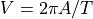
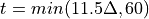
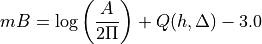

mB_BB¶
mB or mB_BB is a body wave magnitude like mb but with amplitudes measured in a broad frequency range and in longer time windows.
Description¶
The name mB is used in SeisComP as a synonym for mB_BB which is recommended by the IASPEI commission 2 .
mB is a magnitude based on body waves like mb, but with the amplitude measured in a broad frequency range and longer time windows. Instead of amplitude measurements on displacement data together with the dominant period, the maximum velocity amplitude Vmax is taken directly from velocity-proportional records with . The time window for the measurement can be determined by the duration of the high-frequency (1-3 Hz) radiation (Bormann & Saul, 2008). This time window usually contains the phases P, pP, sP, PcP, but not PP. According to the long time window and broad frequency range used for amplitude measurements mB saturates not like mb.
Amplitude¶
The mB amplitudes are calculated on vertical-component displacement seismograms in accordance with 1 and similar to mb. A default time window of 60 s is considered for amplitude measurements at stations in the distance range of 5° to 105°. If the epicentral is known, the length of the time window after the P wave onset is

where  is the epicentral distance. The methods for measuring
amplitudes are configurable in the global bindings.
is the epicentral distance. The methods for measuring
amplitudes are configurable in the global bindings.
Station Magnitude¶
The mB station magntiudes are calculated in accordance with Bormann and Saul (2008) 1.

with A as the displacement amplitude in micrometers, T as the dominant period of the signal in seconds, Q as a correction term for depth and distance.
Amplitude unit in SeisComP: nanometers/s (nm/s),
Time window: 60 s if set by scautopick, otherwise 0 s - 11.5 * distance (deg) with 60 s minimum
Default distance range: 5 - 105 deg, configurable:
magnitudes.mB.minDist,magnitudes.mB.maxDist,Depth range: no limitation.
Note
In 2013 the IASPEI commission 2 recommended a minimum distance of
20 deg. However, the calibration formula 1 which is intergrated in
SeisComP allows the extension down to 5 deg while maintaining consistent magnitudes
at 20 deg and beyond. Therefore, 5 deg is used as the default in
magnitudes.mB.minDist.
Network magnitude¶
By default, the trimmed mean is calculated from the station magnitudes to form the network magnitude. Outliers beyond the outer 12.5% percentiles are removed before forming the mean.
References¶
- 1(1,2,3)
P. Bormann and J. Saul (2008): The New IASPEI Standard Broadband Magnitude mB, Seismol. Res. Lett., 79 (5): 698–705, doi: https://doi.org/10.1785/gssrl.79.5.698
- 2(1,2)
IASPEI magnitude working group (2013). SUMMARY OF MAGNITUDE WORKING GROUP RECOMMENDATIONS ON STANDARD PROCEDURES FOR DETERMINING EARTHQUAKE MAGNITUDES FROM DIGITAL DATA, Link to PDF document